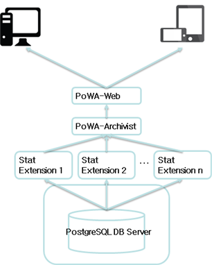
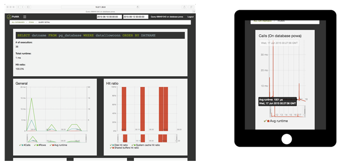

PoWA는 PostgreSQL의 성능 통계 정보를 모아 실시간으로 차트와 그래프 형태를 이용하여 보여준다. 이로써 DB 관리자는 PoWA를 이용한 효율적인 모니터링과 손쉬운 튜닝을 할 수 있다. PoWA에 대한 자세한 정보는 http://powa.readthedocs.org/en/latest/에서 확인하기 바란다.
기본적으로 PoWA가 제공해주는 정보는 DB들에 대한 상세정보(평균구동시간, 블록 정보, I/O 시간), DB시스템 전체의 질의 처리 수행시간, 각 DB에서 수행된 질의들과 해당 질의에 대한 성능 통계 정보 및 인덱스 추천 정보 등이 있다. 이와 같은 DB 통계 정보들은 PostgreSQL의 stats collector 역할을 하는 모듈들이 모은 정보를 PoWA-archivist가 선별하여 종합하고 이를 PoWA-Web을 통해 사용자에게 보여 지게 된다. 아래는 이러한 사항을 반영한 PoWA의 개괄적인 아키텍쳐이다.

PoWA는 브라우져를 통한 GUI 환경을 제공해주기 때문에 브라우져를 구동시킬 수 있는 모든 기기에서 DB 모니터링을 가능케 한다. 다음은 PoWA를 구동시킨 모습이다.
